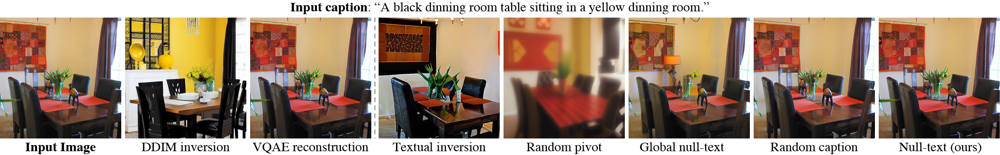

NULL-text Inversion for Editing Real Images using Guided Diffusion Models

Null-text inversion enables intuitive text-based editing of real images with the Stable Diffusion model. We use an initial DDIM inversion as an anchor for our optimization which only tunes the null-text embedding used in classifier-free guidance.
Recent large-scale text-guided diffusion models provide powerful image generation capabilities. Currently, a massive effort is given to enable the modification of these images using text only as means to offer intuitive and versatile editing tools. To edit a real image using these state-of-the-art tools, one must first invert the image with a meaningful text prompt into the pretrained model's domain. In this paper, we introduce an accurate inversion technique and thus facilitate an intuitive text-based modification of the image. Our proposed inversion consists of two key novel components: (i) Pivotal inversion for diffusion models. While current methods aim at mapping random noise samples to a single input image, we use a single pivotal noise vector for each timestamp and optimize around it. We demonstrate that a direct DDIM inversion is inadequate on its own, but does provide a rather good anchor for our optimization. (ii) Null-text optimization, where we only modify the unconditional textual embedding that is used for classifier-free guidance, rather than the input text embedding. This allows for keeping both the model weights and the conditional embedding intact and hence enables applying prompt-based editing while avoiding the cumbersome tuning of the model's weights. Our null-text inversion, based on the publicly available Stable Diffusion model, is extensively evaluated on a variety of images and various prompt editing, showing high-fidelity editing of real images.
On top: We first apply an initial DDIM inversion on the input image which estimates a diffusion trajectory (top trajectory). Starting the diffusion process from the last latent code results in unsatisfying reconstruction (bottom trajectory) as the intermediate codes become farther away from the original trajectory. We use the initial trajectory as a pivot for our optimization which brings the diffusion backward trajectory closer to the original image.

Bottom: NULL-text optimization for
timestamp t. Recall that classifier-free guidance consists of performing the noise prediction twice – using text condition embedding
and unconditionally using NULL-text embedding ∅ (bottom-left).
Then, these are extrapolated with guidance scale w (middle). We
optimize only the unconditional embeddings ∅t by employing a reconstruction MSE loss (in red) between the predicated latent code to the pivot.

As demonstrated below, our method accurately inverts an input image (top row) using different input captions (left image in each row).
Yet, the edited parts should be included in the caption. For example, to edit the print on the shirt,
the caption should include a descriptive term like ”shirt with a drawing” (last row).

The cross-attention maps, which were obtained after the inversion, provide intuition on the editing capabilities with respect to the different captions. For example, only in the top row, we do get an attention map that captures the hair of the woman and therefore enables the local editing of the hair color or style using Prompt-to-Prompt.
We compare the performance of our full algorithm (green line) to different variations, evaluating the reconstruction quality by measuring the PSNR score as a function of number optimization iterations and running time in minutes. Below, we visually show the inversion results after 200 iterations of our full algorithm (on right) compared to other baselines.
